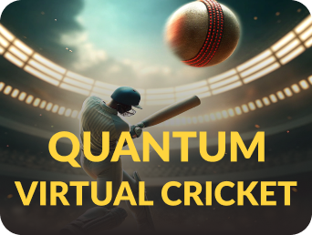

<div class="virtual-layout">
  <aside class="sports-sidebar">
    <app-sidebar />
  </aside>

  <main class="virtual-content">
    @if (isChildRouteActive) {
      <router-outlet />
    } @else {
      <section class="virtual-sports-page">
        <header class="virtual-header">
          <button type="button" class="back-btn" (click)="goBack()" aria-label="Go back">
            <i class="fa-solid fa-chevron-left" aria-hidden="true"></i>
          </button>
          <h1 class="title">Virtual Sports</h1>
        </header>

        <div class="games-grid">
          <a class="game-card" routerLink="/virtual/quantum-cricket" aria-label="Play Quantum Virtual Cricket">
            <div class="card-media">
              
            </div>
          </a>
        </div>

        <app-footer />
      </section>
    }
  </main>
</div>